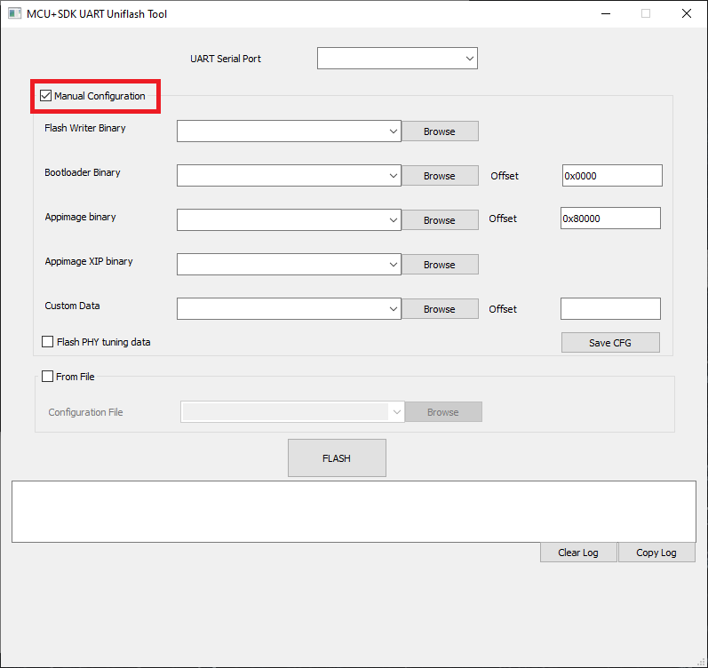
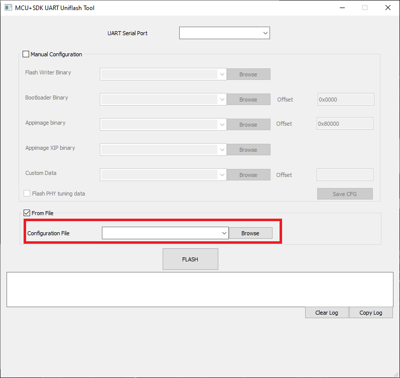

|
AM64x MCU+ SDK
10.00.00
|
|
|
AM64x MCU+ SDK
10.00.00
|
|
Flashing tools allow to flash binaries to the flash on a EVM.
UART is used as the transport or interface to send the file to flash to the EVM.
| Folder/Files | Description |
|---|---|
| ${SDK_INSTALL_PATH}/tools/boot/ | |
| uart_uniflash.py | Flashing tool |
| sbl_prebuilt/am64x-evm | Pre-built bootloader images and default flash configuration files for a supported EVM |
| ${SDK_INSTALL_PATH}/examples/drivers/boot/ | |
| sbl_uart_uniflash | Flashing application that is run on the EVM to receive files to flash |
| sbl_ospi | OSPI bootloader application that needs to be flashed at offset 0x0. When in OSPI boot mode, this bootloader application will boot the user application file for all the CPUs |
| sbl_null | SOC init bootloader application that can be used to init the SOC when working in CCS IDE environment. |
sbl_uart_uniflash), OSPI bootloader (sbl_ospi), and the user application (*.appimage) you want to flash is built for the EVM.{SDK_INSTALL_PATH}/tools/boot/sbl_prebuilt/{board}
{SDK_INSTALL_PATH}/examples/drivers/boot
hs_fs.tiimage files that are generated as part of the build.*.appimage.hs_fs file that is generated as part of the build. ${SDK_INSTALL_PATH}/tools/boot/sbl_prebuilt/{board}/default_sbl_ospi.cfg
--flash-writer={path to flash application .tiimage}
--file={path to OSPI bootloader .tiimage} --operation=flash --flash-offset=0x0
.appimage.hs_fs) file --file={path to your application .appimage.hs_fs file} --operation=flash --flash-offset=0x80000
.appimage_xip) file. When not using XIP mode, this file input is optional. --file={path to your application .appimage_xip file} --operation=flash-xip
sbl_emmc ${SDK_INSTALL_PATH}/examples/drivers/boot/sbl_emmc/am64x-evm/r5fss0-0_nortos/default_sbl_emmc.cfg
sbl_emmc_linux ${SDK_INSTALL_PATH}/examples/drivers/boot/sbl_emmc_linux/am64x-evm/r5fss0-0_nortos/default_sbl_emmc_linux.cfg
--flash-writer={path to flash application .tiimage}
--file={path to eMMC bootloader .tiimage} --operation=flash-emmc --flash-offset=0x0
.appimage) file needs to be specified in the configuration file as --file={path to your application .appimage file} --operation=flash-emmc --flash-offset=0x800000
cmd.exe) or Linux bash shell to flash the files. cd ${SDK_INSTALL_PATH}/tools/boot
python uart_uniflash.py -p {name of your UART com port} --cfg={path to your edited config file}
cd ${SDK_INSTALL_PATH}/tools/boot
python uart_uniflash.py --help
If the flashing fails, the error message will give a hint as to why it failed. Some common error messages, reasons and potential solutions are listed below.
| Error | Possible Reason | Solution |
|---|---|---|
| Serial port not found or not accessible | Wrong UART port passed as argument or the UART port is open in some other terminal application. | Check the UART port, UART ports are named as COM1, COM2, and so on in Windows and as /dev/ttyUSB0, /dev/ttyUSB1, and so on in Linux. Also make sure to close all open UART terminals and try again. |
| No response or error response from EVM. | Either EVM is not in power-ON state or EVM is not setup in UART boot mode. | Use Ctrl-C to terminate the script if it is stuck. Check UART boot mode switch setting, check power to EVM, power-cycle EVM and try again |
| Flashing failed error message | This should not happen ideally on TI EVMs. On custom EVM this could happen if there is some issue in the flash driver on the EVM. | Power cycle EVM and try again. If the problem still does not go away, then likely the flash on the EVM has gone bad. Try other SOC initialization options and check the flash driver via CCS IDE debug. |
| Config file parsing error | Wrong config file passed or input files not found. | Check the message that is printed, and edit the config file to fix the parsing errors. Make sure to specify file paths with forward slash /, including in Windows. The default config file should not have any errors though. |
| Python not found error or python packages not not found error | Python or python packages needed for this script are not installed | Follow steps mentioned in Python3 to install python and related packages |
| Parsing config file error | SBL binaries are missing from the prebuilt folder | Build sbl using below command: gmake -s sbl DEVICE=am243x
|
The detailed sequence of steps that happen when flashing files is listed below, refer to the EVM Setup page to see how to setup the EVM in different boot modes that are needed for this sequence of steps.
sbl_uart_uniflash.release.tiimage) via the flashing tool using UART+XMODEM protocol underneath.sbl_ospi.release.hs_fs.tiimage). If the OSPI bootloader is already flashed previously then this step can be skipped.*.appimage.hs_fs). The offset 0x80000 is the offset that is specified in the OSPI bootloader and when the EVM boots in OSPI mode, it will attempt to find a application at this location.UART Uniflash GUI is a GUI wrapper around the UART Uniflash tool already present (uart_uniflash.py). This is a strictly experimental feature with minimal testing from TI side. Can be used if GUI is more comfortable. Since most of the CLI tool is used underneath, it is the same functionality wise
This GUI is built on top of the python based UART Uniflash CLI tool already mentioned, and specifically based on the PyQt5 binding of the QT5 framework. So it is expected that python3 and other dependencies (xmodem, pyserial etc) are already installed. In addition to this, one also needs to install the PyQt5 python library for the GUI to work.
In windows, you can install PyQt5 by doing below:
python -m pip install pyqt5
In Ubuntu (or other Debian based distros) you can install PyQt5 by doing below:
sudo apt install python3-pyqt5
The UART Uniflash GUI can be used to flash files arbitrarily into the device flash
At the top there is a drop down to select the UART COM port which will be used for flashing. Please connect the target to the EVM before running the GUI so that the serial port we are interested will show up here.

UART Uniflash GUI : Manual Config based flashing |

UART Uniflash GUI : Config file based flashing |
sbl_ospi or sbl_qspi. Although this is no different than flashing any other file to a particular offset, we have decided to keep it a separate option for better clarity. Although the offset is almost always 0, we have provided an offset edit box as well if there is any change whatsoever.*.appimage_xip). These files already contain details as to where these need to be flashed, so no need to provide any offset in this case.
*.cfg extension) specifying what needs to be flashed. This is a convenient option if the files to be flashed are pretty much the same for every try. In fact even in the manual config case, a cfg file is created internally and used for flashing. This cfg follows the same format used by the CLI script.After selecting the config options and files, just press the FLASH button to start the flashing. A progress bar will show the flashing progress.
There is also a log area which will show detailed logs in addition to the pop up messages.
uart_uniflash.py CLI script, and reuses a lot of objects and functions, so core functionality is the same among both.FLASH button is clicked. If this is not required, make sure to delete it and keep it blank, the drop down is editable. This is true for the config file drop down as well, but the mishap is more probable in manual config case.
| Folder/Files | Description |
|---|---|
| ${SDK_INSTALL_PATH}/tools/boot/ | |
| usb_dfu_uniflash.py | Flashing tool |
| sbl_prebuilt/am64x-evm | Pre-built bootloader images and default flash configuration files for a supported EVM |
| ${SDK_INSTALL_PATH}/examples/drivers/boot/ | |
| sbl_dfu_uniflash | Flashing application that is run on the EVM to receive files to flash |
| sbl_ospi | OSPI bootloader application that needs to be flashed at offset 0x0. When in OSPI boot mode, this bootloader application will boot the user application file for all the CPUs |
| sbl_null | SOC init bootloader application that can be used to init the SOC when working in CCS IDE environment. |
cmd.exe) or Linux bash shell to flash the files. cd ${SDK_INSTALL_PATH}/tools/boot
python usb_dfu_uniflash.py --cfg={path to your edited config file}
cd ${SDK_INSTALL_PATH}/tools/boot
python usb_dfu_uniflash.py --help
The detailed sequence of steps that happen when flashing files is listed below, refer to the EVM Setup page to see how to setup the EVM in different boot modes that are needed for this sequence of steps.
sbl_dfu_uniflash.release.hs_fs.tiimage) via the flashing tool using USB2.0 DFU protocol underneath.sbl_ospi.release.hs_fs.tiimage). If the OSPI bootloader is already flashed previously then this step can be skipped.*.appimage). The offset 0x80000 is the offset that is specified in the OSPI bootloader and when the EVM boots in OSPI mode, it will attempt to find a application at this location.JTAG is used as the transport or interface to send the file to flash to the EVM.
| Folder/Files | Description |
|---|---|
| ${SDK_INSTALL_PATH}/examples/drivers/boot/ | |
| sbl_jtag_uniflash | Flash-writer example which uses JTAG to write files or erase flash |
Refer the example SBL JTAG Uniflash
 1.8.20
1.8.20